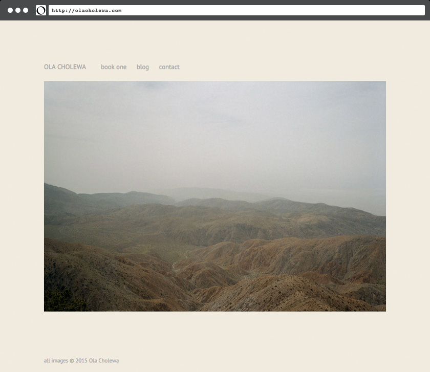
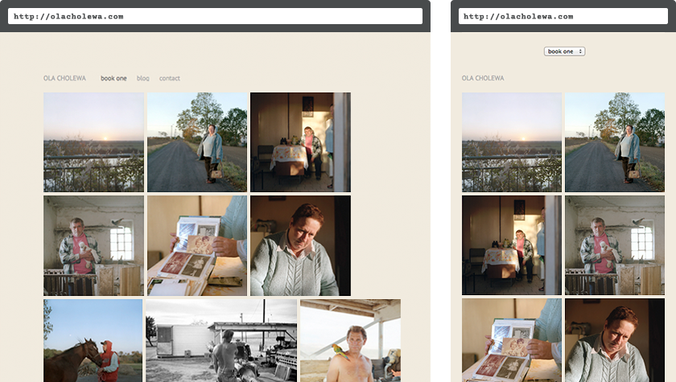
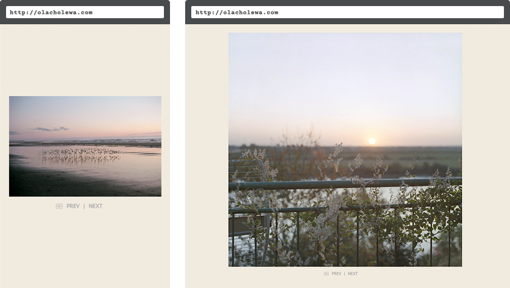

James Nizam — Online Portfolio
Aiming for simplicity: an Indexhibit site moves over to WordPress, with a mobile update to boot.
Making something appear simple can be complex task, and migrating a site from one platform to another can be a complete headache. Instead of getting caught up in all the details of a site migration, a brand-new WordPress site was built to look exactly like an old Indexhibit site, with an added upgrade for mobile devices.
To start off, a simple random image function gives users a fresh image for their visit.
Images are arranged in groups and by page, in a responsive grid to accommodate different aspect ratios.
The gallery page uses a custom template that responds to touch events for mobile viewers.
And adjusts on resize to accommodate portrait and landscape viewing modes.
Conclusion
Sometimes instead of a re-build its better to just start from scratch — in this case, on a new CMS platform. The site is now positioned to evolve on a platform that has an active development community.